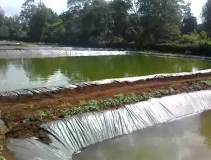

Welcome

Located in Pap-Onditi, Nyakach, Sally Anne's Farm is a diversified agricultural enterprise dedicated to producing healthy, organic, and value-added products that support sustainable livelihoods.
About Us
We are passionate about organic farming and sustainable food production. Our farm operates in a rural environment that allows us to grow and rear our products naturally and responsibly. We aim to promote community nutrition awareness and provide high-quality organic products you can trust.

Our Livestock

Dairy Goats: Fresh milk, yoghurt, and natural goat milk soap.

Poultry: Healthy, farm-raised chickens and fresh eggs.

Rabbit Farming: Utilizing rabbit manure and urine as organic fertilizer.
Aquaculture & Vegetables
Fish Pond Farming
- Tilapia and Catfish rearing
- Sun-dried fish for wider access
- Community nutrition awareness
Fresh & Dried Vegetables
- Farm-fresh green leafy vegetables
- Sun-dried vegetables for long shelf life
- Nutritious and affordable produce

Value Addition

- Goat milk yoghurt: Creamy and nutritious
- Goat milk soap: Natural skincare solution
- Sun-dried fish: Preserved for longer shelf life
Our Commitment
- Organic and eco-friendly farming
- Sustainable rural development
- Community empowerment
- 100% Natural Fertilizer
Marketplace

Healthy produce direct from our farm to your table.